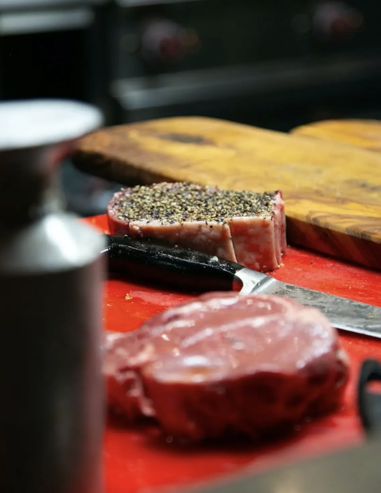
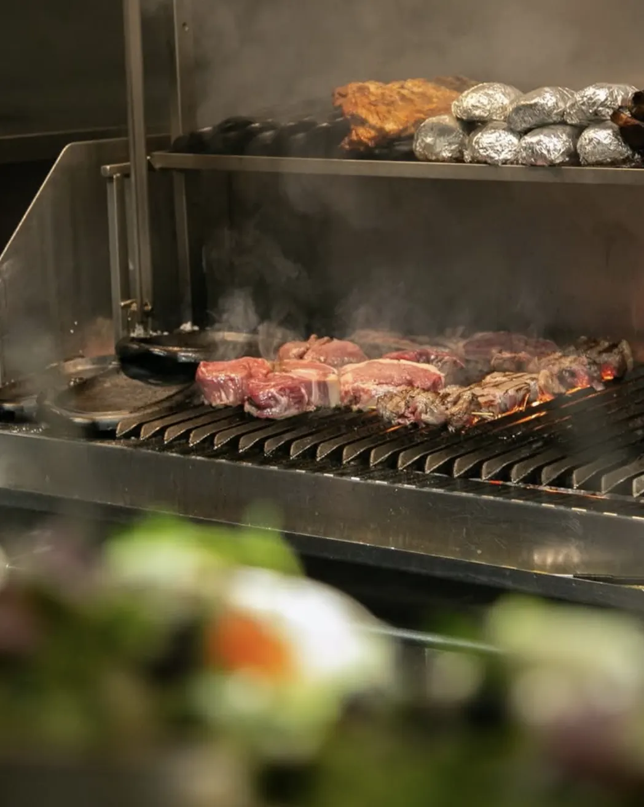
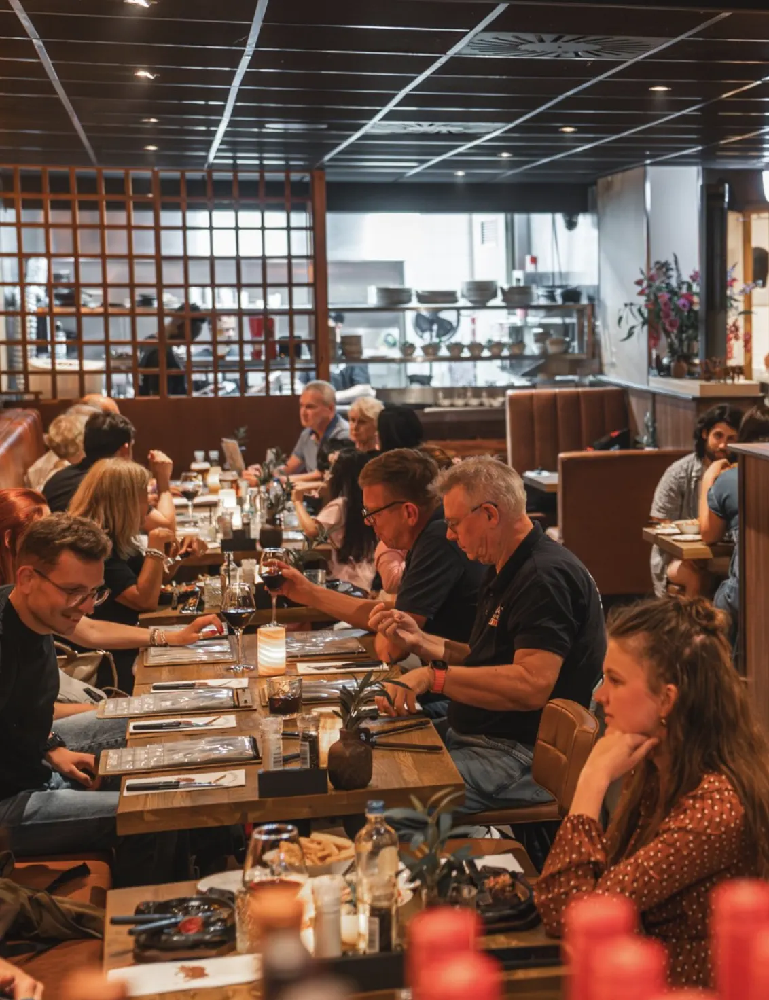
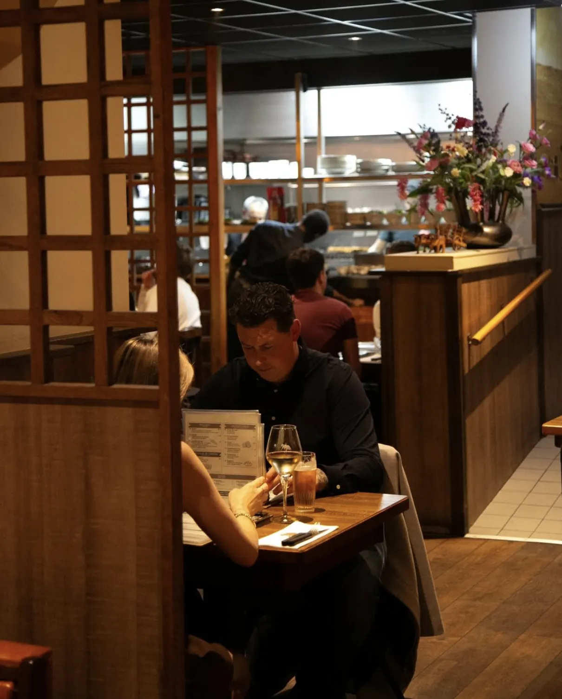

We hebben een heerlijk stuk rib eye gegeten dat tot in perfectie klaargemaakt was. Medium rare gevraagd en gekregen. En zoals altijd: service met een glimlach!

Op maat gesneden, van 200 gram tot een hele kilo.

Eerst de kruiden, dan pas naar het vuur.

Over echte houtskool, voor een korst vol smaak.

Sissend op gietijzer, op de garing die jij koos.
Iedereen aan tafel kiest gewoon waar hij zin in heeft: van de Bife de Lomo tot de spareribs, van de burgers tot de sauzen.

Gasten schrijven het keer op keer: het eten is top, en de mensen maken het af. Een wijnadvies bij je steak, een praatje als jij wilt, service met een glimlach.
Iets te vieren? Stuur ons een bericht





We hebben een heerlijk stuk rib eye gegeten dat tot in perfectie klaargemaakt was. Medium rare gevraagd en gekregen. En zoals altijd: service met een glimlach!

Mooie inrichting en een fijne, gezellige sfeer. Goed advies gekregen over een heerlijke rode wijn bij het vlees. Men had tijd voor een praatje en de kwaliteit van het eten was perfect. Zeker een aanrader!
Een fantastische ervaring bij Rancho Bravo! Het vlees was van uitstekende kwaliteit, perfect gegrild en vol smaak. Het personeel was ontzettend gastvrij: vanaf het moment dat ik binnenkwam voelde ik me thuis.